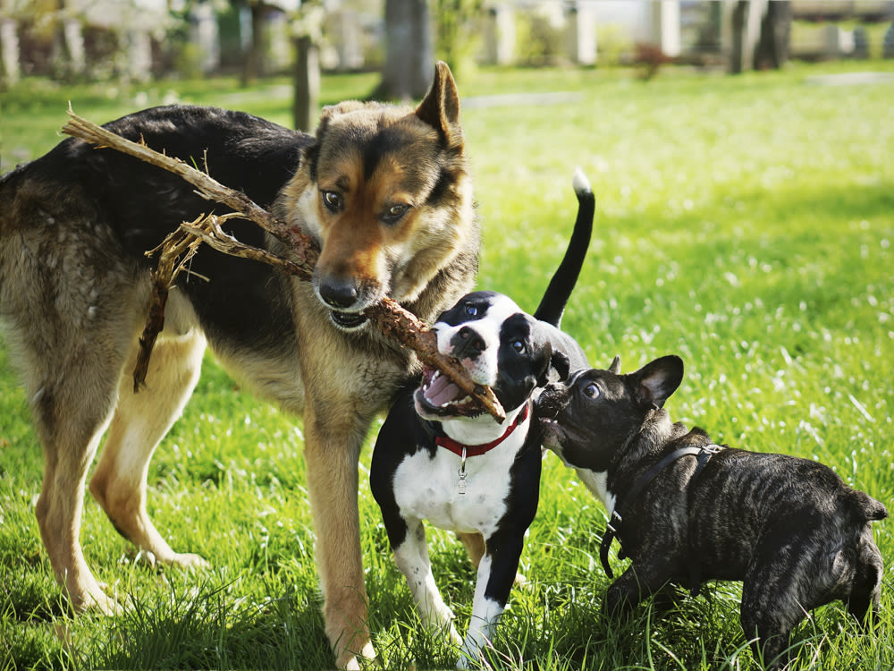
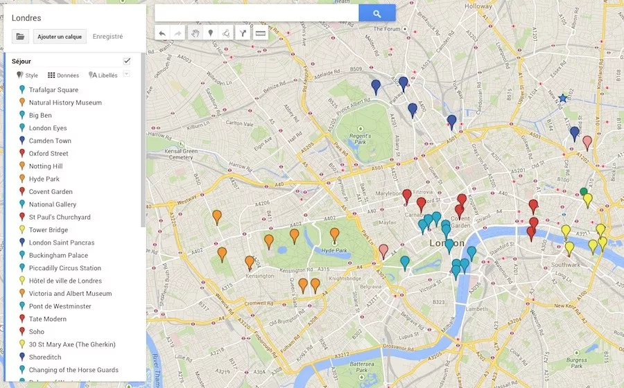

Préparez vos prochaines walkies, faites vous des amis a deux ou quatre pattes, échanger avec des propriétaires passionnés et profitez-en pour faire de belles balades
Vous souhaitez :
Walkyz comment ça marche ?
Inscrivez vous afin de remplir votre profil et celui de votre animal
Echanger avec des propriétaires de chien afin de planifier une balade ou une rencontre
Faites connaissance et partagez des instants de complicités
Prêt pour la balade ?
Tous les jours de nouvelles personnes s'inscrivent sur Walys et cherchent des compagnons pour une promenade ou du temps de jeu !
Rejoignez une communauté de fans de chien afin d'organiser facilement des balades dans votre zone géographique.
Que vous soyez un amateur de marche, de randonnée ou simplement un lanceur de frisbee amateur, définissez le type de sortie que vous cherchez au préalable.Sur Walkyz, tout le monde y trouve son compte.
Personnalisez votre profil ainsi que celui de votre compagnons afin de trouver le parfait partenaire de jeu
Parcourez notre base de données de lieux de balade "dog-friendly" afin de trouver un nouveau lieu de promenade, ou regardez qui parcours votre Walkyz habituel pour organiser une rencontre